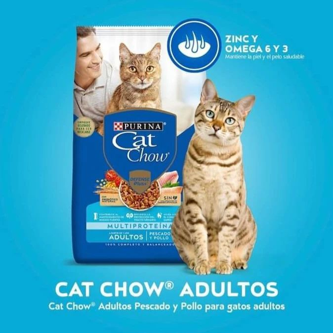

comidas
En nuestro albergue "Pata y Garra", la compra de alimentos para perros y gatos es un proceso crucial para asegurar el bienestar nutricional de nuestros residentes peludos. Aquí te explicamos cómo llevamos a cabo este proceso.